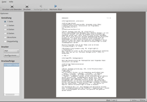

Boomaga
Dieser Artikel wurde für die folgenden Ubuntu-Versionen getestet:
Ubuntu 16.04 Xenial Xerus
Ubuntu 14.04 Trusty Tahr
Zum Verständnis dieses Artikels sind folgende Seiten hilfreich:
Boomaga  (Booklet manager) ist ein virtueller Drucker, mit dem die Ausgabe eines Druckauftrags angezeigt werden kann, bevor diese an einen Drucker übergeben wird. Durch seine Position zwischen Anwenderprogramm und Drucker erlaubt es eine universell nutzbare Druckvorschau auch bei Anwendungen, in denen diese Funktion nicht vorgesehen ist. Zusätzlich kann das Layout des Ausdrucks noch angepasst (Druck mehrerer Seiten auf einer) und mehrere Druckaufträge zu einem zusammengefasst werden.
(Booklet manager) ist ein virtueller Drucker, mit dem die Ausgabe eines Druckauftrags angezeigt werden kann, bevor diese an einen Drucker übergeben wird. Durch seine Position zwischen Anwenderprogramm und Drucker erlaubt es eine universell nutzbare Druckvorschau auch bei Anwendungen, in denen diese Funktion nicht vorgesehen ist. Zusätzlich kann das Layout des Ausdrucks noch angepasst (Druck mehrerer Seiten auf einer) und mehrere Druckaufträge zu einem zusammengefasst werden.
Weitere Programme rund um das Thema sind in den Artikeln Broschürendruck und Druckwerkzeuge zu finden.
Installation¶

Das Programm ist ab Ubuntu 16.04 in den offiziellen Paketquellen enthalten. Folgendes Paket muss installiert werden [1]:
boomaga (universe)
 mit apturl
mit apturl
Paketliste zum Kopieren:
sudo apt-get install boomaga
sudo aptitude install boomaga
PPA¶
Die aktuellste Version ist über ein "Personal Package Archiv" (PPA) [2] des Programmautors erhältlich. Dieses PPA unterstützt auch ältere Ubuntu-Versionen.
Adresszeile zum Hinzufügen des PPAs:
ppa:boomaga/ppa
Hinweis!
Zusätzliche Fremdquellen können das System gefährden.
Ein PPA unterstützt nicht zwangsläufig alle Ubuntu-Versionen. Weitere Informationen sind der  PPA-Beschreibung des Eigentümers/Teams boomaga zu entnehmen.
PPA-Beschreibung des Eigentümers/Teams boomaga zu entnehmen.
Damit Pakete aus dem PPA genutzt werden können, müssen die Paketquellen neu eingelesen werden.
Nach dem Aktualisieren der Paketquellen erfolgt die Installation wie oben angegeben.
Bedienung¶

Als virtueller Drucker ist die Anwendung anschließend über "Datei -> Drucken -> Boomaga -> Drucken" in anderen Programmen verfügbar. Am linken Fensterrand kann über "Layout" ausgewählt werden, ob der Druckauftrag auf mehrere Seiten verteilt bzw. zusammengefasst werden soll. Über das Kontextmenü  können leere Seiten hinzugefügt oder vorhandene entfernt werden. Der jeweilige Standarddrucker ist als Ziel voreingestellt. Möchte man beim Drucker noch gezielt weitere Einstellungen vornehmen, verwendet man die Schaltfläche "Konfiguriere...". Auf Wunsch ist möglich, mehrere Druckaufträge in einem zu bündeln.
können leere Seiten hinzugefügt oder vorhandene entfernt werden. Der jeweilige Standarddrucker ist als Ziel voreingestellt. Möchte man beim Drucker noch gezielt weitere Einstellungen vornehmen, verwendet man die Schaltfläche "Konfiguriere...". Auf Wunsch ist möglich, mehrere Druckaufträge in einem zu bündeln.
Von besonderem Reiz ist, dass Boomaga auch Broschüren drucken kann. In Kombinationen mit der Funktion "doppelseitig" lassen sich so Druckausgaben herstellen, die gefaltet und geheftet werden können.
Problembehebung¶
Falls ein Programm den Druckerauswahldialog nicht anbietet, kann man Boomaga als Standarddrucker einstellen. Wie das geht, ist von der jeweiligen Desktop-Umgebung abhängig. Alternativ kann man dazu die Weboberfläche von CUPS über die URL http://localhost:631 nutzen.
Ubuntu 14.04.5: Seit kurzem (Stand: Mitte Juli 2017) kommt es zu einem Fehler, der sich darin äußert, dass Boomaga die übergebenen Druckaufträge in der Vorschau nicht mehr anzeigt und auch bei der Erstellung von PDF-Dateien scheitert. In diesem Falle sollte folgende Vorgehensweise helfen:
Folgende Datei muss heruntergeladen werden: https://launchpad.net/~boomaga/+archive/ubuntu/ppa/+files/boomaga_0.9.1-1trusty.tar.gz Sofern die Datei unter "Downloads" abgelegt wurde, sollte folgende Vorgehensweise im Terminal funktionieren:
cd ~/Downloads tar -zxf boomaga_0.9.1-1trusty.tar.gz cd boomaga-0.9.1/ dpkg-buildpackage -rfakeroot
Fall der Vorgang abbricht, liegt es daran, das noch fehlende Abhängigkeiten nachinstalliert werden müssen. Diese sind die Pakete:
ibcups2-dev
libsnappy-dev
libpoppler-dev
libpoppler-cpp-dev
mit apturl
Paketliste zum Kopieren:
sudo apt-get install ibcups2-dev libsnappy-dev libpoppler-dev libpoppler-cpp-dev
sudo aptitude install ibcups2-dev libsnappy-dev libpoppler-dev libpoppler-cpp-dev
Danach ist erneut der Befehl
dpkg-buildpackage -rfakeroot
auszuführen. Dann kann das neu gebaute Paket installiert werden:
cd .. sudo dpkg -i boomaga_0.9.1-1trusty_amd64.deb
Links¶
Wiki
- Dokumentation
Bookletimposer
- PDF-basierte Alternative (ab Ubuntu 14.04 in den offiziellen Paketquellen enthalten)Drucker
 Übersichtsartikel
Übersichtsartikel
- Erstellt mit Inyoka
-
 2004 – 2017 ubuntuusers.de • Einige Rechte vorbehalten
2004 – 2017 ubuntuusers.de • Einige Rechte vorbehalten
Lizenz • Kontakt • Datenschutz • Impressum • Serverstatus -
Serverhousing gespendet von